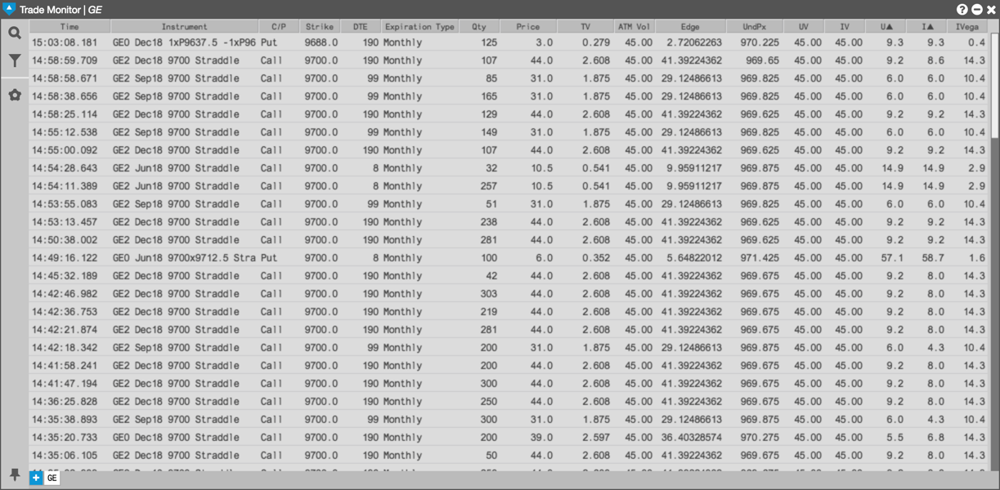
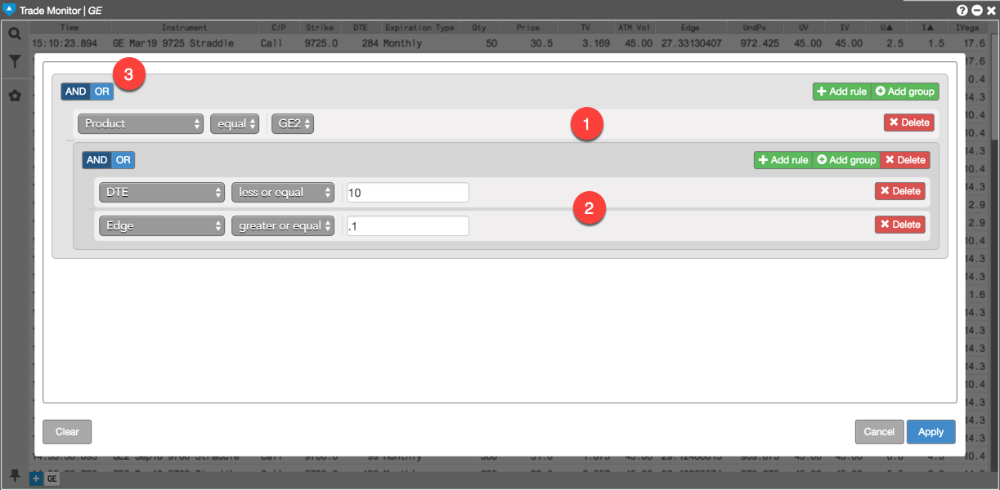
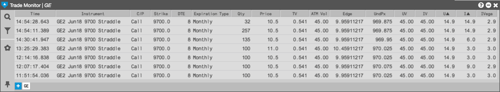

The Options Trade Monitor displays all trades for options instruments associated with the selected exchange and product family, many of which might not meet your trading interests. To help you find specific trades that match your trading needs, the Options Trade Monitor also supports the ability to create simple to complex filters that can reduce the number of trades shown in the widget. You can define widgets to find opportunities for trading options such as those selected products within the product family.

Click in the left panel to open the filter dialog, which provides a graphical way to create the filtering logic as shown in the following example.

The filtering logic includes:
Using this filter reduces the list of trades to those that meet these filter requirements. The filter continues to monitor the incoming trades and adds them as they meet or no longer meet the filter requirements.
